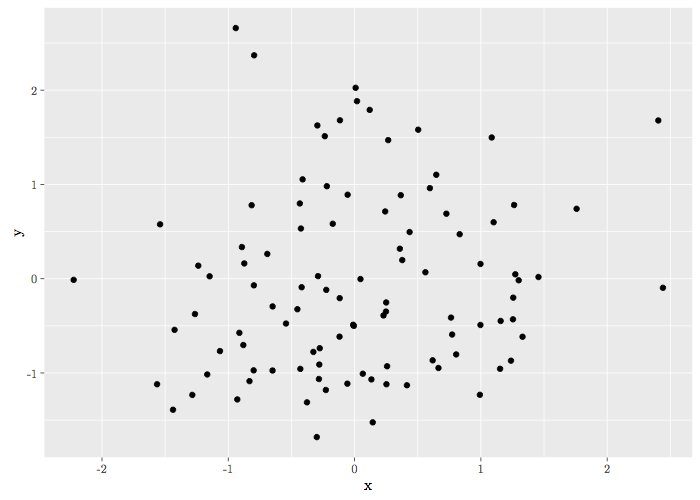
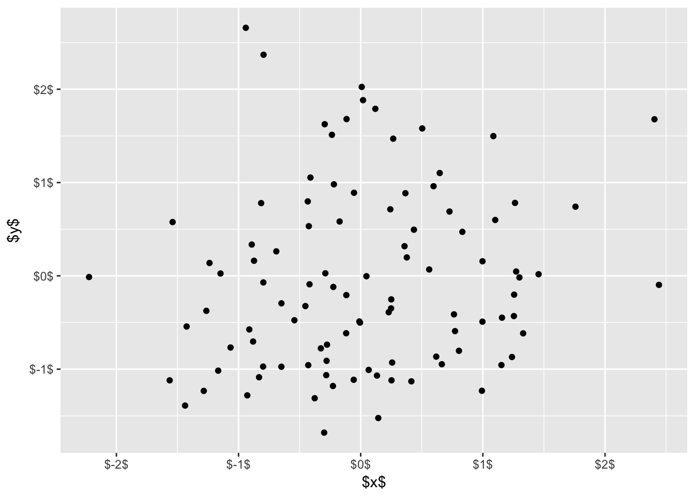
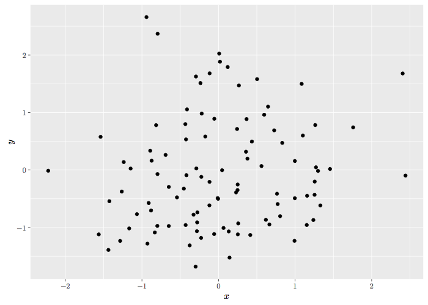

Rからtikzを使えるライブラリにtikzDeviceがあります。 これを使えば，Rで作成した図を，簡単にLaTeXのtikzpicture環境の図に変換できます。
library(ggplot2)
library(tikzDevice)例えば，このような図を作ったとします。
set.seed(0)
x <- rnorm(100)
y <- rnorm(100)
data <- data.frame(x = x, y = y)
g0 <- ggplot(data, aes(x = x, y = y)) + geom_point()
print(g0)tikzコマンドを使えば，簡単に
tikz(file = "g0.tex", width=7, height=5, standAlone=TRUE)
print(g0)
dev.off()## quartz_off_screen
## 2できたLaTeXファイルをコンパイルすると，このような図が得られます。 
しかし，軸ラベルのマイナス記号がハイフンになっているのが気になります。 そこで，scalesパッケージの関数を参考にして，以下のような関数をでっち上げました。
latex_labels <- function(x){
if(length(x)==0)
return(character())
paste0("$", x, "$")
}見ていただくとわかるように，ラベルの数字を$で囲むというだけの関数です。 これを使って，軸ラベルの表示形式を変更します（ついでに，軸タイトルの文字も$でかこんでおきましょう）。
g1 <- g0 + labs(x="$x$", y="$y$") +
scale_x_continuous(labels = latex_labels) + scale_y_continuous(labels = latex_labels)
print(g1)
すると，このような図が得られます。 軸タイトルと軸ラベルの文字が$で囲まれているのがわかると思います。
これを，先ほどと同じようにtikz関数で処理します。
tikz(file = "g1.tex", width=7, height=5, standAlone=TRUE)
print(g1)
dev.off()## quartz_off_screen
## 2結果は下図のようになります。 ハイフンではなく，マイナス記号になっていますね（軸タイトルの文字も，数式フォントになっています）。 
あまり美しい方法ではないですが，まぁ，このようなやり方もある，ということで。